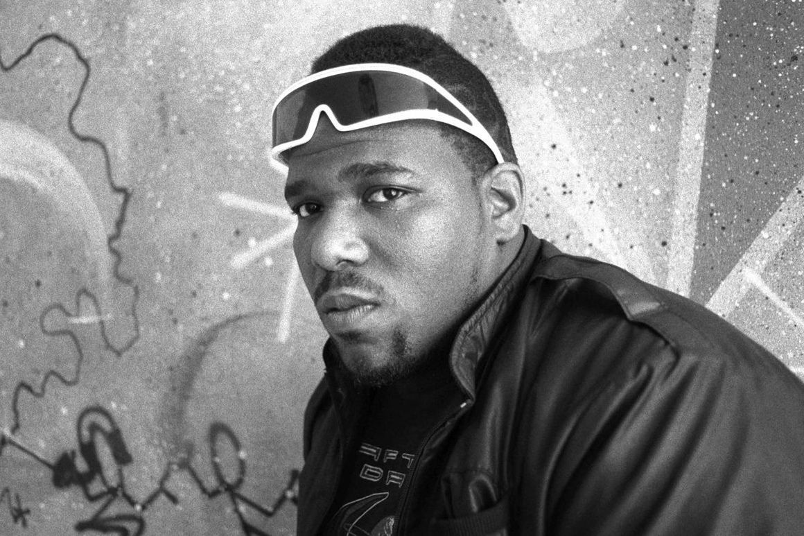
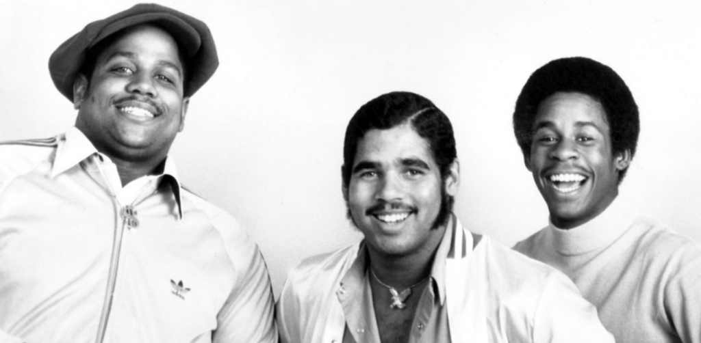
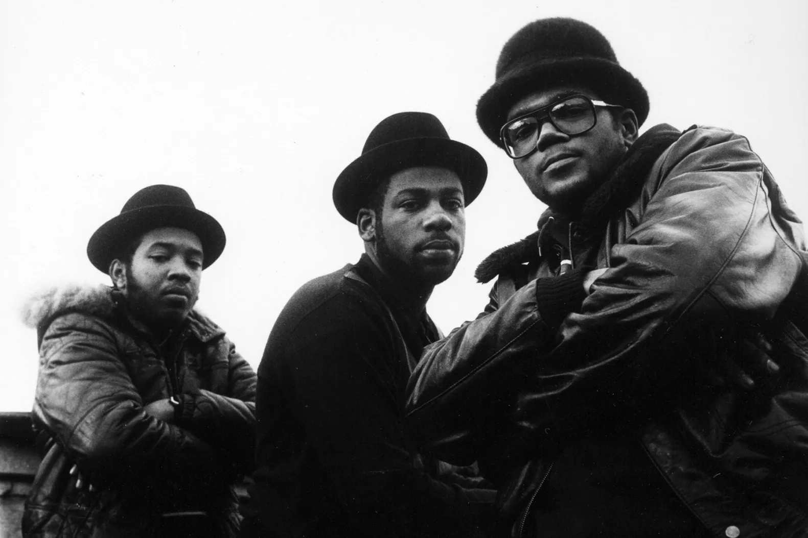
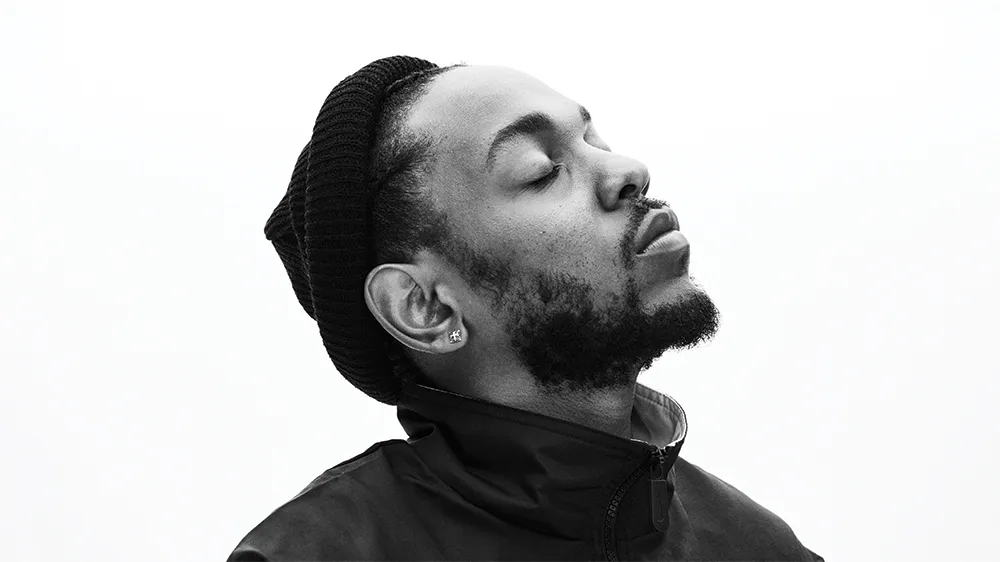

Hip-hop is a cultural movement that originated in the Bronx, New York City, in the 1970s, primarily among African American and Latino communities. It encompasses four main elements: MCing (rapping), which involves spoken or chanted rhythmic lyrics; DJing (turntablism), the art of manipulating sounds and creating beats using turntables; breakdancing (B-boying/B-girling), a dynamic style of dance that includes acrobatic movements; and graffiti art, a visual form of self-expression and storytelling. Over time, hip-hop expanded beyond music to influence fashion, slang, politics, and global culture. Today, it is one of the most dominant musical genres worldwide, with subgenres like trap, boom bap, conscious rap, and gangsta rap.
HIP-HOP ORIGINS
The foundation of hip-hop is credited to DJ Kool Herc, a Jamaican immigrant who, in 1973, pioneered the use of breakbeats—isolating and looping instrumental drum sections of funk and soul records to extend the danceable part of a song. This innovation gave rise to breakdancing (B-boying/B-girling) as dancers, known as B-boys and B-girls, showcased their acrobatic and rhythmic moves during these extended breaks.Around the same time, MCing (rapping) developed as DJs’ hype men began adding rhymed speech over beats, evolving into an art form of its own. Graffiti art also became an essential part of hip-hop, as young artists used city walls and subway trains as canvases for self-expression and visibility in a world that often overlooked them.

As hip-hop grew, Afrika Bambaataa, a former gang leader turned cultural activist, helped organize the movement and define its four core elements: DJing, MCing, breakdancing, and graffiti art. He founded the Universal Zulu Nation, which promoted hip-hop as a tool for peace, unity, and positive change. By the late 1970s and early 1980s, hip-hop began spreading beyond the Bronx, with artists like Grandmaster Flash & The Furious Five, Run-D.M.C., and LL Cool J bringing it to mainstream audiences.
Throughout the 1980s and 1990s, hip-hop continued to evolve, giving rise to new subgenres like gangsta rap, which highlighted the struggles of urban life, and conscious rap, which focused on political and social issues. The genre’s influence expanded globally, and by the 2000s, hip-hop had become a dominant force in music, fashion, and culture worldwide. Today, it continues to evolve, blending with other genres and serving as a platform for storytelling, activism, and artistic innovation.
THE RISE OF HIP-HOP

Early pioneers like Kool Herc, Grandmaster Flash, and Afrika Bambaataa laid the foundation, while "Rapper’s Delight" (1979) by The Sugarhill Gang became the first commercial rap hit.

By the 1980s, artists like Run-D.M.C. and Public Enemy helped push hip-hop into the mainstream through collaborations, political messages, and increased radio and television exposure, including the launch of Yo! MTV Raps in 1988.
The 1990s saw hip-hop dominate popular music, particularly with the rise of gangsta rap and West Coast artists like Dr. Dre, Snoop Dogg, Tupac, and East Coast legends such as The Notorious B.I.G. Albums like The Chronic (1992) and Ready to Die (1994) brought rap to wider audiences, while hip-hop fashion and business ventures expanded its cultural influence. By the 2000s, artists like Jay-Z, Eminem, and Kanye West YeG.O.A.T turned hip-hop into a global industry, leveraging brand deals, fashion lines, and multimedia empires, further cementing its place in mainstream entertainment.

In the 2010s and beyond, streaming and social media platforms like YouTube, TikTok, and Instagram revolutionized hip-hop, allowing independent artists to reach massive audiences without traditional labels. Drake, Kendrick Lamar, Cardi B, and Travis Scott became dominant figures, while festivals like Coachella and Rolling Loud showcased hip-hop as the main attraction. By 2017, hip-hop officially became the most consumed music genre in the U.S., proving its lasting impact on global pop culture.
 The 1990s saw hip-hop dominate popular music, particularly with the rise of gangsta rap and West Coast artists like Dr. Dre, Snoop Dogg, Tupac, and East Coast legends such as The Notorious B.I.G. Albums like The Chronic (1992) and Ready to Die (1994) brought rap to wider audiences, while hip-hop fashion and business ventures expanded its cultural influence. By the 2000s, artists like Jay-Z, Eminem, and
The 1990s saw hip-hop dominate popular music, particularly with the rise of gangsta rap and West Coast artists like Dr. Dre, Snoop Dogg, Tupac, and East Coast legends such as The Notorious B.I.G. Albums like The Chronic (1992) and Ready to Die (1994) brought rap to wider audiences, while hip-hop fashion and business ventures expanded its cultural influence. By the 2000s, artists like Jay-Z, Eminem, and